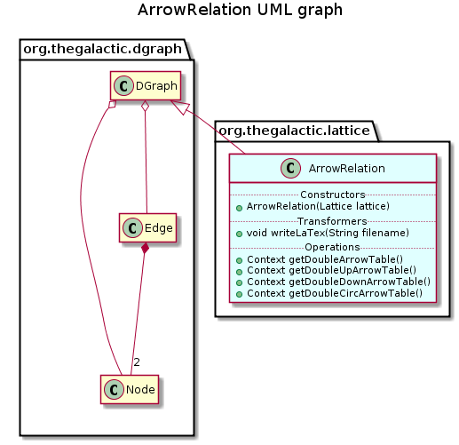

public class ArrowRelation extends ConcreteDGraph
The ArrowRelation class encodes arrow relation between meet & join-irreductibles of a lattice.
Let m and b be respectively meet and join irreductibles of a lattice. Recall that m has a unique successor say m+ and j has a unique predecessor say j-, then :

| Constructor and Description |
|---|
ArrowRelation(Lattice lattice)
Unique constructor of this component from a lattice.
|
| Modifier and Type | Method and Description |
|---|---|
Context |
getDoubleArrowTable()
Returns the table of the lattice, composed of the join and meet irreducibles nodes.
|
Context |
getDoubleCircArrowTable()
Returns the table of the lattice, composed of the join and meet irreducibles nodes.
|
Context |
getDoubleDownArrowTable()
Returns the table of the lattice, composed of the join and meet irreducibles nodes.
|
Context |
getDoubleUpArrowTable()
Returns the table of the lattice, composed of the join and meet irreducibles nodes.
|
boolean |
isCirc(Edge edge)
Returns true if and only if there is an circ arrow between the source and the target of edge e.
|
boolean |
isCross(Edge edge)
Returns true if and only if there is an cross arrow between the source and the target of edge e.
|
boolean |
isDown(Edge edge)
Returns true if and only if there is an down arrow between the source and the target of edge e.
|
boolean |
isUp(Edge edge)
Returns true if and only if there is an up arrow between the source and the target of edge e.
|
boolean |
isUpDown(Edge edge)
Returns true if and only if there is an up-down arrow between the source and the target of edge e.
|
void |
save(String filename)
Save the description of this component in a file whose name is specified.
|
addEdge, addEdge, addEdge, addNode, clone, complementary, containsEdge, containsEdge, containsNode, getEdge, getEdges, getNode, getNodeByContent, getNodeByIdentifier, getNodes, getPredecessorEdges, getPredecessorNodes, getPredecessors, getStronglyConnectedComponent, getSubgraphByEdges, getSubgraphByNodes, getSuccessorEdges, getSuccessorNodes, getSuccessors, reflexiveClosure, reflexiveReduction, removeEdge, removeEdge, removeNode, removeNodes, setNodes, setPredecessors, setSuccessors, sizeEdges, sizeNodes, transitiveClosure, transposegetSinks, getWells, isAcyclic, topologicalSort, toStringpublic ArrowRelation(Lattice lattice)
Unique constructor of this component from a lattice.
Nodes are join or meet irreductibles of the lattice. Edges content encodes arrows as String “Up”, “Down”, “UpDown”, “Cross”, “Circ”.
lattice - Lattice from which this component is deduced.public void save(String filename) throws IOException
Save the description of this component in a file whose name is specified.
save in interface DGraphsave in class AbstractDGraphfilename - the name of the fileIOException - When an IOException occurspublic Context getDoubleArrowTable()
Returns the table of the lattice, composed of the join and meet irreducibles nodes.
Each attribute of the table is a copy of a join irreducibles node. Each observation of the table is a copy of a meet irreducibles node. An attribute is extent of an observation when its join irreducible node is in double arrow relation with the meet irreducible node in the lattice.
Avoid using for (Object edge : this.getEdges()). Use for (Edge edge : this.getEdges())
public Context getDoubleDownArrowTable()
Returns the table of the lattice, composed of the join and meet irreducibles nodes.
Each attribute of the table is a copy of a join irreducibles node. Each observation of the table is a copy of a meet irreducibles node. An attribute is extent of an observation when its join irreducible node is in down arrow relation with the meet irreducible node in the lattice.
public Context getDoubleUpArrowTable()
Returns the table of the lattice, composed of the join and meet irreducibles nodes.
Each attribute of the table is a copy of a join irreducibles node. Each observation of the table is a copy of a meet irreducibles node. An attribute is extent of an observation when its join irreducible node is in up arrow relation with the meet irreducible node in the lattice.
public Context getDoubleCircArrowTable()
Returns the table of the lattice, composed of the join and meet irreducibles nodes.
Each attribute of the table is a copy of a join irreducibles node. Each observation of the table is a copy of a meet irreducibles node. An attribute is extent of an observation when its join irreducible node is in double arrow relation or circ relation with the meet irreducible node in the lattice.
public boolean isUp(Edge edge)
Returns true if and only if there is an up arrow between the source and the target of edge e.
edge - edge to be testedpublic boolean isDown(Edge edge)
Returns true if and only if there is an down arrow between the source and the target of edge e.
edge - edge to be testedpublic boolean isUpDown(Edge edge)
Returns true if and only if there is an up-down arrow between the source and the target of edge e.
edge - edge to be testedpublic boolean isCross(Edge edge)
Returns true if and only if there is an cross arrow between the source and the target of edge e.
edge - edge to be testedpublic boolean isCirc(Edge edge)
Returns true if and only if there is an circ arrow between the source and the target of edge e.
edge - edge to be testedCopyright © 2010–2016 The Galactic Organization. All rights reserved.